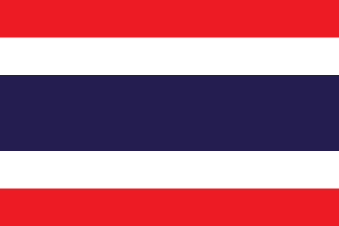
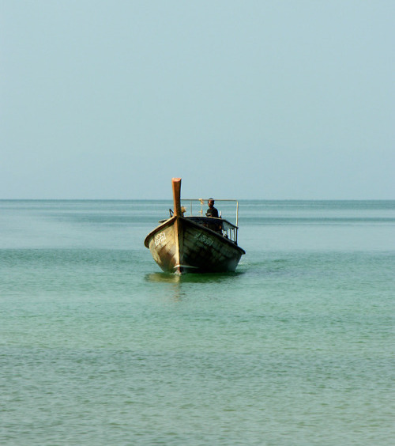
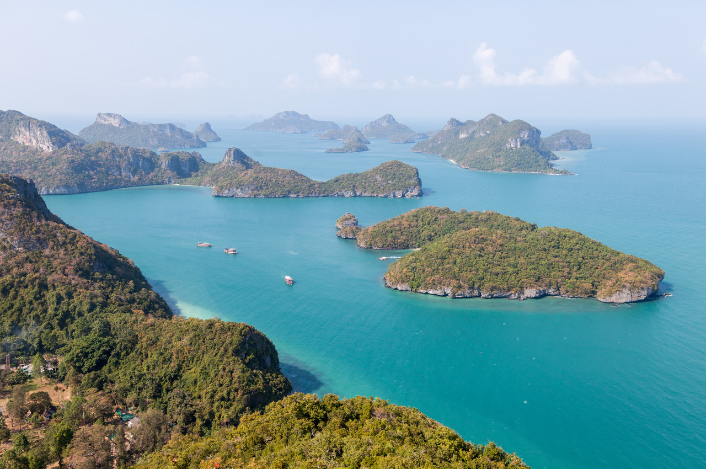

Tajlandia to państwo w południowo-wschodniej Azji, graniczące z Laosem i Kambodżą na wschodzie, z Malezją na południu oraz z Mjanmą (Birmą) na zachodzie i północnym zachodzie. Dawniej państwo nosiło nazwę Syjam jako oficjalną do 11 maja 1949. Angielskie określenie „Thai” (ไทย) znaczy po tajsku wolny. Tajlandia to jeden z popularniejszych kierunków, jeżeli chodzi o Azję Południowo-Wschodnią. Wiele osób wybiera ją jako cel swojej pierwszej podróży do Azji.

Podstawowe informacje
| Waluta |
Bat |
| Powierzchnia |
513 120km² |
| Język |
Tajski |
| Stolica |
Bangkok |
| Typ Państwa |
Monarchia konstytucyjna |
| Ustrój polityczny |
Demokratyczny |
| Religia dominująca |
Buddyzm |
| Liczba ludności |
67 091 089 |

Tajlandia jest jednym z najchętniej odwiedzanych krajów Azji, popularnym celem wakacyjnych wyjazdów, wypraw trampingowych, czy podróży poślubnych. Od lat nieustannie przyciąga tłumy turystów z całego świata.
Jako jedyny kraj w regionie, nie uległa kolonizacji, wolna od obcych, europejskich wpływów, mogła nieprzerwanie, bez przeszkód kultywować własną tradycję. Dzisiejsza Tajlandia jest mocno skomercjalizowana, a turystyka jest jedną z ważniejszych gałęzi przemysłu.
Źródła:
wikipedia.org/wiki/Tajlandia
lkedzierski.com/tajlandia/co-warto-zobaczyc-w-tajlandii
www.tumblr.com/search/thailand+tourism
mandalay.pl/tajlandia